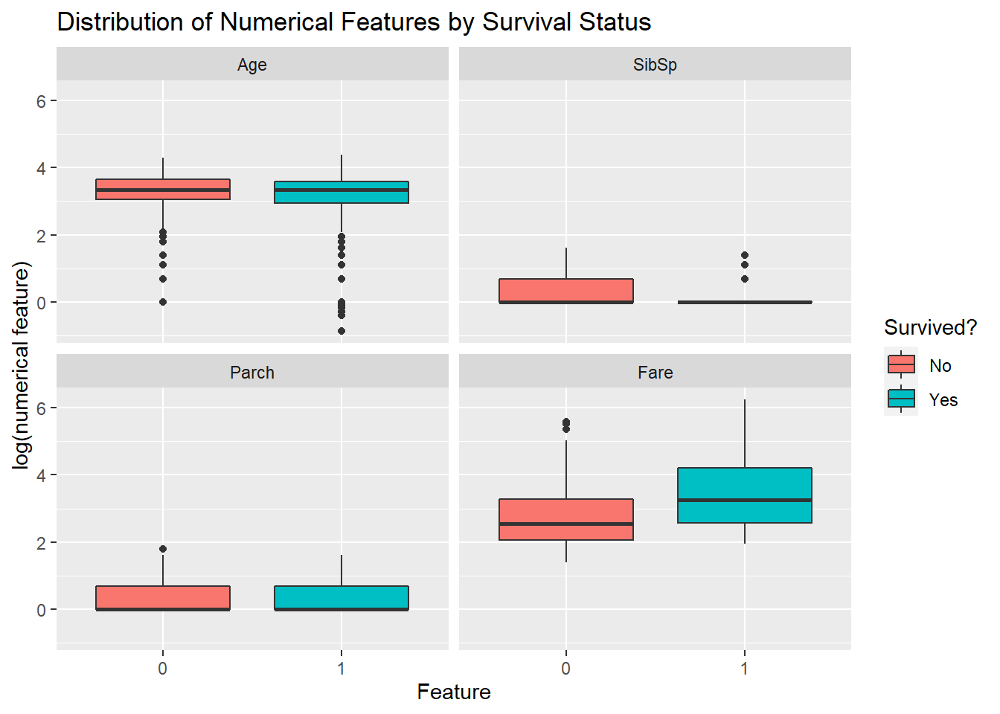
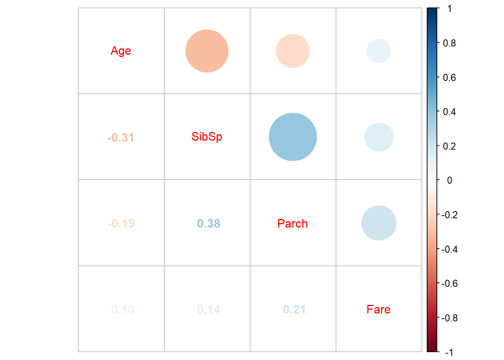
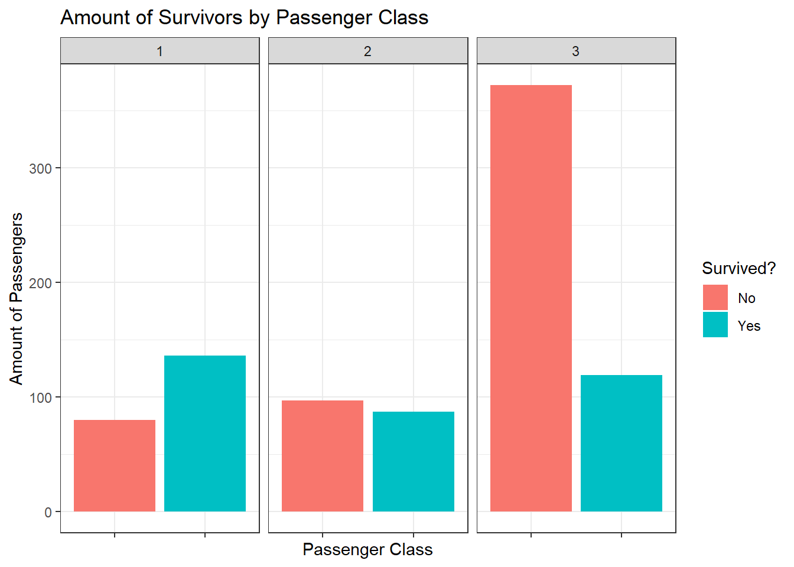

3.4 Exploratory Data Analysis
Before we begin building and training our models, it helps to explore the data a bit first. Doing so not only gives us a better understanding of the data that we’re dealing with, but also helps us uncover hidden (and perhaps significant) relationships that we can then use when we finally begin building our model5.
In this portion of the workflow, we will be using modelData exclusively. Like I previously mentioned, testData is the set of data that we’ll be applying our predictor to once we’re happy with its performance - because of this, we shouldn’t touch it now lest the model we build becomes prone to overfitting6.
3.4.1 Understanding feature distribution by survival status
I think we can start by observing the distribution of our variables by survival status. Doing so not only allows us to understand the distribution of our data, but also potentially understand which feature(s) are important in determining one’s survival status. I also used the log transform of our data lest ggplot2 squashes our boxplots.
modelData %>% select(-c(Ticket, Embarked, Name, Pclass, Sex)) %>%
na.omit() %>%
melt(id.var = 'Survived') %>% ggplot(aes(x = Survived, y = log(value))) +
geom_boxplot(aes(fill = Survived)) + facet_wrap(~variable, ncol = 2) +
labs(title = "Distribution of Numerical Features by Survival Status",
x = "Feature",
y = "log(numerical feature)",
fill = "Survived?") + scale_fill_discrete(labels = c("No", "Yes"))## Warning: Removed 999 rows containing non-finite values (stat_boxplot).
Unfortunately, I don’t think that the boxplots above show anything useful. We see that those who died had more or less the same amount of spouses and / or siblings and / or parents and / or children (this also implies that a good chunk of our passengers were travelling alone). Furthermore, neither age nor fare paid seem to vary too much between dead and alive passengers.
3.4.2 Correlation analysis with numerical variables
Our numerical variables alone don’t seem to to be a good predictor of one’s survival status. However, I also wonder if any of these numerical variables also share relationships with one another:
modelData %>% select(-c(Ticket, Embarked, Name, Pclass, Sex, Survived)) %>%
na.omit() %>% cor() %>% corrplot.mixed()
This doesn’t seem to be the case either. At best, it seems to imply that SibSp and Parch are somewhat related (i.e., the more siblings and / or spouses that one has on board the Titanic, the more parents and / or children the passenger on board has too) - something similar can probably also be said for Age and SibSp. However, we should still take the aforementioned with a grain of salt as the Pearson correlation coefficient between these pairs of variables are only 0.38 and -0.31.
On the plus side, if we do end up using these numerical features in say - a logistic regression model - then colinearity isn’t an issue.
3.4.3 Exploring passengers’ passenger classes
Our numerical variables seem to do a poor job in predicting the survival status of our passengers (at least by themselves). Hence, might more passengers have survived based on their passenger classes?
modelData %>% select(c(Pclass, Survived)) %>% na.omit() %>%
ggplot(aes(x = Survived)) + geom_bar(aes(fill = Survived)) +
facet_wrap(~Pclass) +
labs(title = "Amount of Survivors by Passenger Class",
x = "Passenger Class",
y = "Amount of Passengers",
fill = "Survived?") +
scale_fill_discrete(labels = c("No", "Yes")) + theme_bw() +
theme(axis.text.x = element_blank())
I think moving forward, Pclass is one of the variables that we can use in our models. We see that first class passengers survived the most, followed by second class passengers, and lastly, third class passengers.
This is also in line with what I found on the internet:
- Third class accommodations were located at the bottom of the Titanic.
- Second class accommodations were located at the aft (i.e., the back of the Titanic).
- First class accommodations were located on the upper decks of the Titanic.